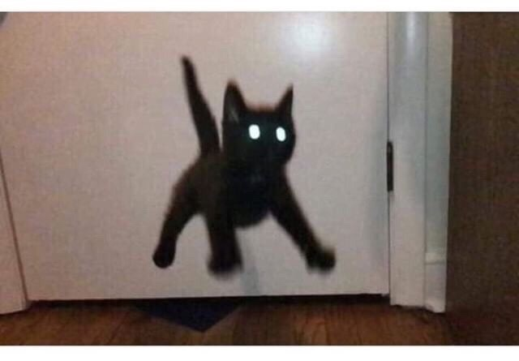

Adoration
The main figure in focus is the black shape of a cat who has embraced
their full force as an earthly being and is ready to embark on a journey
of spiritual amplification. Just as the Magi in their wisdom were allowed
to see the path to Nazareth, so too has the cat chosen their destiny
as the wonderer, fully connected to all realms of spiritality and
through their dark limbs which escape proper ideographic representation,
as they are stretched in search for the true meaing of life. The power
of this piece lies in its optimistic outlook on those who search for
beauty in the world.
Feline Comedy, Purgatorio
A continuation of Inferno, this piece represents the second step towards
salvation that we all are looking for in life. The feline has risen
from its slumbering state of anguish in the Inferno and is now ready
to continue in his ascent. This chapter is one of purification, of
gradual penitence in perparation of the sublimation that is to come in
the folowing part of the visual narrative (Paradiso). The cat's stretched
paws are tense in aspiration, already in a state of relative elevation,
allowing for the partial disappearance of its hind paws.
A Portrait of the Artist as a Cat
In the same vane as The Abyss in the Grumpy Cat section, this painting
is a portrait, yes, but also a portal into something much deeper: a
mirror to certain domains of self-reflection that perhaps the average
person isn't too familar or even comfortable with seeing. Staring into
the dark eyes of the creature we not only sense that we are gaining
insight into ourselves, but that, through those eyes, we are seeing
beyond our field of vision, into that of the cat: we are seeing the
rest of the world through them, and the only feeling evoqued is the
one that we see plastered on the face of the cat, deep resignation at
the banality of existence.
Impression, the Rising Cat
A true masterpiece of impressionist art. This piece exudes all the energy
and vibrance the we have come to expect from generetion defining masters of
their craft such as Van Gogh, Matisse, and Pissarro. What is represented
on the canvas is not a cat but, more subtly, the impression of one, as
it rises from its eartlhy state into a higher dimension of being. Here,
physical meets metaphysical at the precise moment of transcendence: it
is only in this moment that it is possible to gain glimpse of the
other side of perception, as the feline represented is allowing us to
experience it throught the fleeting image of its body.
